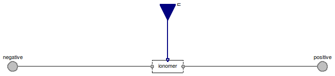

Table of Contents
- User's Guide
- BCs
- Sensors
- Assemblies**
- Regions**
- Subregions
- Connectors
- Characteristics
- Units
- Quantities
- BaseClasses
- **Please check back soon or contact kdavies4 at gmail.com.
Download
- Latest: FCSys-2.0.zip (**Check back soon.)

The hierarchy of these boundary condition models is similar to that of the models in the BCs.FaceBus package. For more information, please see the documentation in that package.
Extends from Modelica.Icons.Package (Icon for standard packages).
| Name | Description |
|---|---|
| BC for faces of a Region or Subregion model, with efforts by default | |
| BC for faces of a Region or Subregion model, with flows by default | |
| BC for faces of a Region or Subregion model, with efforts except closed by default | |
| BC for faces of a Region or Subregion model, with flows except zero shear velocities by default | |
| BC for faces of a Region or Subregion model, with efforts except adiabatic by default | |
| BCs for the FaceBus connector, e.g., of a Phase model (multi-species) |
 FCSys.BCs.FaceBusDifferential.Subregion
FCSys.BCs.FaceBusDifferential.Subregion
| Type | Name | Default | Description |
|---|---|---|---|
| Axis | axis | Axis.x | Axis normal to the face |
| Phases | |||
| Gas | gas | redeclare FCSys.BCs.FaceBusD... | Gas |
| Graphite | graphite | redeclare FCSys.BCs.FaceBusD... | Graphite |
| Ionomer | ionomer | redeclare FCSys.BCs.FaceBusD... | Ionomer |
| Type | Name | Description |
|---|---|---|
| FaceBus | negative | |
| RealInputBus | u | |
| FaceBus | positive |
model Subregion "BC for faces of a Region or Subregion model, with efforts by default" extends FCSys.BaseClasses.Icons.BCs.Double; parameter Axis axis=Axis.x "Axis normal to the face";replaceable FCSys.BCs.FaceBusDifferential.Phases.Gas gas(final axis=axis) "Gas"; replaceable FCSys.BCs.FaceBusDifferential.Phases.Graphite graphite(final axis =axis) "Graphite"; replaceable FCSys.BCs.FaceBusDifferential.Phases.Ionomer ionomer(final axis= axis) "Ionomer"; FCSys.Connectors.FaceBus negative; FCSys.Connectors.RealInputBus u; FCSys.Connectors.FaceBus positive; equationconnect(gas.negative, negative.gas); connect(graphite.negative, negative.graphite); connect(ionomer.negative, negative.ionomer); connect(gas.positive, positive.gas); connect(graphite.positive, positive.graphite); connect(ionomer.positive, positive.ionomer); connect(u.gas, gas.u); connect(u.graphite, graphite.u); connect(u.ionomer, ionomer.u); end Subregion;
FCSys.BCs.FaceBusDifferential.SubregionFlow
| Type | Name | Default | Description |
|---|---|---|---|
| Axis | axis | Axis.x | Axis normal to the face |
| Type | Name | Description |
|---|---|---|
| FaceBus | negative | |
| RealInputBus | u | |
| FaceBus | positive |
model SubregionFlow "BC for faces of a Region or Subregion model, with flows by default" extends FCSys.BCs.FaceBusDifferential.Subregion( gas( H2( redeclare replaceable FaceDifferential.Material.Current material, redeclare replaceable FaceDifferential.Mechanical.Force mechanicalX, redeclare replaceable FaceDifferential.Mechanical.Force mechanicalY, redeclare replaceable FaceDifferential.Mechanical.Force mechanicalZ, redeclare replaceable FaceDifferential.Thermal.HeatFlowRate thermal), H2O( redeclare replaceable FaceDifferential.Material.Current material, redeclare replaceable FaceDifferential.Mechanical.Force mechanicalX, redeclare replaceable FaceDifferential.Mechanical.Force mechanicalY, redeclare replaceable FaceDifferential.Mechanical.Force mechanicalZ, redeclare replaceable FaceDifferential.Thermal.HeatFlowRate thermal), N2( redeclare replaceable FaceDifferential.Material.Current material, redeclare replaceable FaceDifferential.Mechanical.Force mechanicalX, redeclare replaceable FaceDifferential.Mechanical.Force mechanicalY, redeclare replaceable FaceDifferential.Mechanical.Force mechanicalZ, redeclare replaceable FaceDifferential.Thermal.HeatFlowRate thermal), O2( redeclare replaceable FaceDifferential.Material.Current material, redeclare replaceable FaceDifferential.Mechanical.Force mechanicalX, redeclare replaceable FaceDifferential.Mechanical.Force mechanicalY, redeclare replaceable FaceDifferential.Mechanical.Force mechanicalZ, redeclare replaceable FaceDifferential.Thermal.HeatFlowRate thermal)), graphite(C( redeclare replaceable FaceDifferential.Material.Current material, redeclare replaceable FaceDifferential.Mechanical.Force mechanicalX, redeclare replaceable FaceDifferential.Mechanical.Force mechanicalY, redeclare replaceable FaceDifferential.Mechanical.Force mechanicalZ, redeclare replaceable FaceDifferential.Thermal.HeatFlowRate thermal), 'e-'( redeclare replaceable FaceDifferential.Material.Current material, redeclare replaceable FaceDifferential.Mechanical.Force mechanicalX, redeclare replaceable FaceDifferential.Mechanical.Force mechanicalY, redeclare replaceable FaceDifferential.Mechanical.Force mechanicalZ, redeclare replaceable FaceDifferential.Thermal.HeatFlowRate thermal)), ionomer( C19HF37O5S( redeclare replaceable FaceDifferential.Material.Current material, redeclare replaceable FaceDifferential.Mechanical.Force mechanicalX, redeclare replaceable FaceDifferential.Mechanical.Force mechanicalY, redeclare replaceable FaceDifferential.Mechanical.Force mechanicalZ, redeclare replaceable FaceDifferential.Thermal.HeatFlowRate thermal), H2O( redeclare replaceable FaceDifferential.Material.Current material, redeclare replaceable FaceDifferential.Mechanical.Force mechanicalX, redeclare replaceable FaceDifferential.Mechanical.Force mechanicalY, redeclare replaceable FaceDifferential.Mechanical.Force mechanicalZ, redeclare replaceable FaceDifferential.Thermal.HeatFlowRate thermal), 'H+'( redeclare replaceable FaceDifferential.Material.Current material, redeclare replaceable FaceDifferential.Mechanical.Force mechanicalX, redeclare replaceable FaceDifferential.Mechanical.Force mechanicalY, redeclare replaceable FaceDifferential.Mechanical.Force mechanicalZ, redeclare replaceable FaceDifferential.Thermal.HeatFlowRate thermal)));end SubregionFlow;
FCSys.BCs.FaceBusDifferential.SubregionClosed
| Type | Name | Default | Description |
|---|---|---|---|
| Axis | axis | Axis.x | Axis normal to the face |
| Type | Name | Description |
|---|---|---|
| FaceBus | negative | |
| RealInputBus | u | |
| FaceBus | positive |
model SubregionClosed "BC for faces of a Region or Subregion model, with efforts except closed by default" extends FCSys.BCs.FaceBusDifferential.Subregion( gas( H2(redeclare replaceable FaceDifferential.Material.Current material), H2O(redeclare replaceable FaceDifferential.Material.Current material), N2(redeclare replaceable FaceDifferential.Material.Current material), O2(redeclare replaceable FaceDifferential.Material.Current material)), graphite(C(redeclare replaceable FaceDifferential.Material.Current material), 'e-'(redeclare replaceable FaceDifferential.Material.Current material)), ionomer( C19HF37O5S(redeclare replaceable FaceDifferential.Material.Current material), H2O(redeclare replaceable FaceDifferential.Material.Current material), 'H+'(redeclare replaceable FaceDifferential.Material.Current material)));end SubregionClosed;
FCSys.BCs.FaceBusDifferential.SubregionClosedAdiabatic
| Type | Name | Default | Description |
|---|---|---|---|
| Axis | axis | Axis.x | Axis normal to the face |
| Type | Name | Description |
|---|---|---|
| FaceBus | negative | |
| RealInputBus | u | |
| FaceBus | positive |
model SubregionClosedAdiabatic "BC for faces of a Region or Subregion model, with flows except zero shear velocities by default" extends FCSys.BCs.FaceBusDifferential.Subregion( gas( H2(redeclare replaceable FaceDifferential.Material.Current material, redeclare replaceable FaceDifferential.Thermal.HeatFlowRate thermal), H2O(redeclare replaceable FaceDifferential.Material.Current material, redeclare replaceable FaceDifferential.Thermal.HeatFlowRate thermal), N2(redeclare replaceable FaceDifferential.Material.Current material, redeclare replaceable FaceDifferential.Thermal.HeatFlowRate thermal), O2(redeclare replaceable FaceDifferential.Material.Current material, redeclare replaceable FaceDifferential.Thermal.HeatFlowRate thermal)), graphite(C(redeclare replaceable FaceDifferential.Material.Current material, redeclare replaceable FaceDifferential.Thermal.HeatFlowRate thermal), 'e-'(redeclare replaceable FaceDifferential.Material.Current material, redeclare replaceable FaceDifferential.Thermal.HeatFlowRate thermal)), ionomer( C19HF37O5S(redeclare replaceable FaceDifferential.Material.Current material, redeclare replaceable FaceDifferential.Thermal.HeatFlowRate thermal), H2O(redeclare replaceable FaceDifferential.Material.Current material, redeclare replaceable FaceDifferential.Thermal.HeatFlowRate thermal), 'H+'(redeclare replaceable FaceDifferential.Material.Current material, redeclare replaceable FaceDifferential.Thermal.HeatFlowRate thermal)));end SubregionClosedAdiabatic;
FCSys.BCs.FaceBusDifferential.SubregionAdiabatic
| Type | Name | Default | Description |
|---|---|---|---|
| Axis | axis | Axis.x | Axis normal to the face |
| Type | Name | Description |
|---|---|---|
| FaceBus | negative | |
| RealInputBus | u | |
| FaceBus | positive |
model SubregionAdiabatic "BC for faces of a Region or Subregion model, with efforts except adiabatic by default" extends FCSys.BCs.FaceBusDifferential.Subregion( gas( H2(redeclare replaceable FaceDifferential.Thermal.HeatFlowRate thermal), H2O(redeclare replaceable FaceDifferential.Thermal.HeatFlowRate thermal), N2(redeclare replaceable FaceDifferential.Thermal.HeatFlowRate thermal), O2(redeclare replaceable FaceDifferential.Thermal.HeatFlowRate thermal)), graphite(C(redeclare replaceable FaceDifferential.Thermal.HeatFlowRate thermal), 'e-'(redeclare replaceable FaceDifferential.Thermal.HeatFlowRate thermal)), ionomer( C19HF37O5S(redeclare replaceable FaceDifferential.Thermal.HeatFlowRate thermal), H2O(redeclare replaceable FaceDifferential.Thermal.HeatFlowRate thermal), 'H+'(redeclare replaceable FaceDifferential.Thermal.HeatFlowRate thermal)));end SubregionAdiabatic;